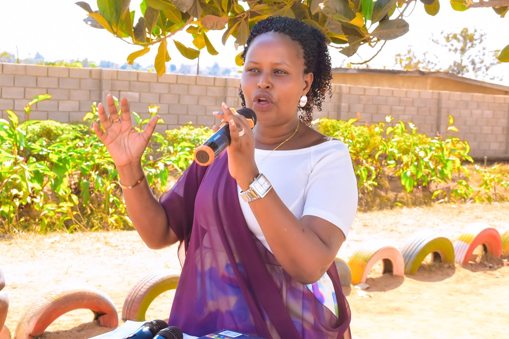

Alumni and parents Voices
What Our Alumni Say
"Praise Academy gave me the confidence to speak, serve, and dream bigger than I thought possible."
"Praise Academy gave me the confidence to speak, serve, and dream bigger than I thought possible."

"The school shaped my discipline and helped me build the study habits that still guide me today."

"I remember a school that cared deeply about both excellence and kindness, and that balance changed me."

"The learning experience went beyond the classroom and taught me to explore the world with curiosity."

"I left Praise Academy with strong values, faith, and the courage to keep learning wherever life takes me."

"The teachers saw potential in me early, and their encouragement gave me a strong foundation."

"What stands out most is how the school combined academic growth with character formation and spiritual grounding."

"Praise Academy taught me that success is not only about results, but also about integrity and service."

"The environment helped me become more responsible, more confident, and more ready for the next stage of life."
"I still carry the lessons of discipline, faith, and hard work that Praise Academy planted in me."
Hear directly from members of the Praise Academy family
"Praise Academy shaped my confidence early and taught me that faith, discipline, and education can grow together."
"The school environment encouraged responsibility and servant leadership, and those lessons have remained with me."
"What I value most is how Praise Academy balanced academic effort with strong character and personal growth."
"The discipline I learned at school helped me stay focused, respectful, and prepared for the next stages of life."
"Praise Academy gave me a strong foundation in learning and helped me believe I could keep improving every day."
"I still remember a caring school community that valued kindness, excellence, and the courage to keep learning."
"Teaching at Praise Academy School has been one of the most fulfilling experiences of my career. The school nurtures not only academic excellence but also character, which makes every day meaningful. I feel proud to be part of a team that truly cares about each child’s future."
"Being a student at Praise Academy School has helped me grow both in my studies and in my faith. I have learned to work hard and trust in God in everything I do."
"At Praise Academy School, our mission is to provide a holistic education that nurtures both the mind and character of every learner. We are committed to academic excellence, discipline, and values that prepare our students to thrive in a changing world."
"I appreciate how the school kept encouraging us to pursue excellence while remaining disciplined and respectful."
"Praise Academy doesn’t just focus on grades—it builds values. As a teacher, I appreciate how we guide students to become responsible, respectful, and disciplined individuals."
"It was a school community where we were challenged to work hard, stay kind, and honour the values we were taught."
"Praise Academy School was founded on a strong Christian foundation, with a vision to nurture children in both knowledge and the fear of God. We believe that true education combines academic excellence with spiritual growth."
"At Praise Academy School, Christ is at the center of everything we do. Our goal is to guide students to grow in wisdom, knowledge, and faith, preparing them to live purposeful and God-honoring lives."
"Enrolling my child at Praise Academy School has been one of the best decisions I have made. I have seen great improvement not only in academics but also in character and faith. My child now prays confidently and shows respect at home and in the community."
Praise Academy School is a Christian-based institution committed to providing quality and affordable education that nurtures academic excellence, discipline, and moral integrity.
Founded in 2018 by Mutoni Monique in Gasabo District, Ndera Sector, Masoro Cell, the school was established to support vulnerable children, including orphans and the needy, through quality education rooted in strong Christian values.
We aim to develop learners who are not only successful academically but also responsible and God-fearing citizens, prepared to positively impact their communities.
Hope for the future
Year Established
Learning Sections: Nursery and Primary
Founder: Mutoni Monique